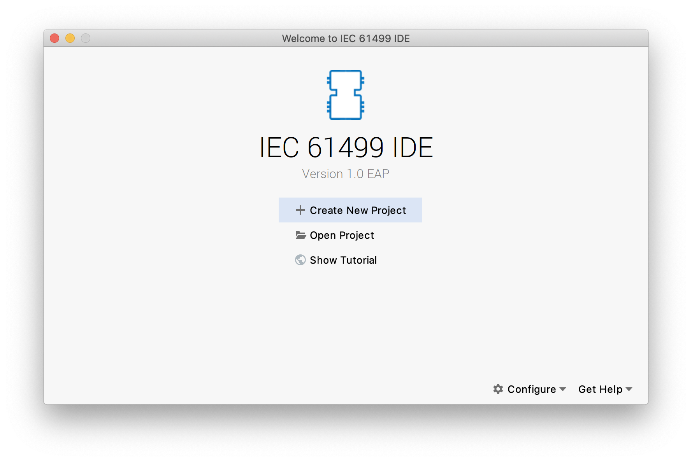
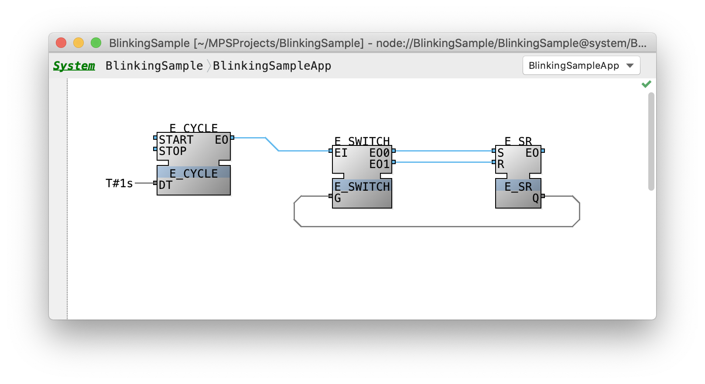
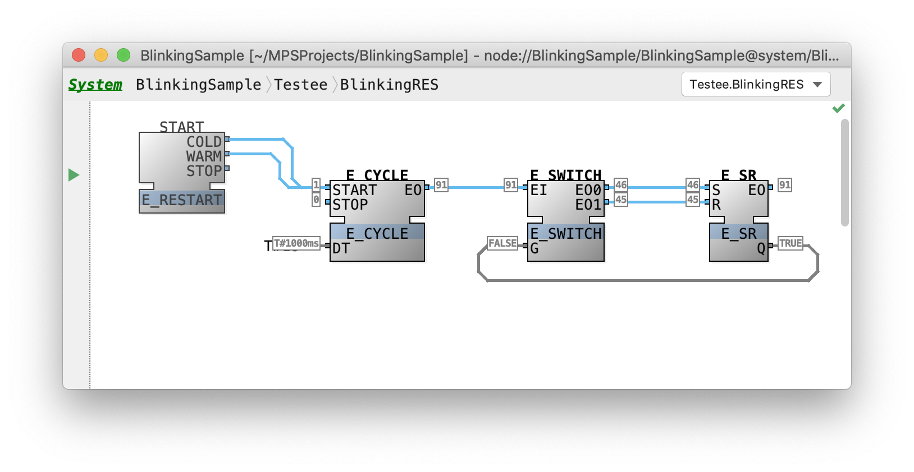
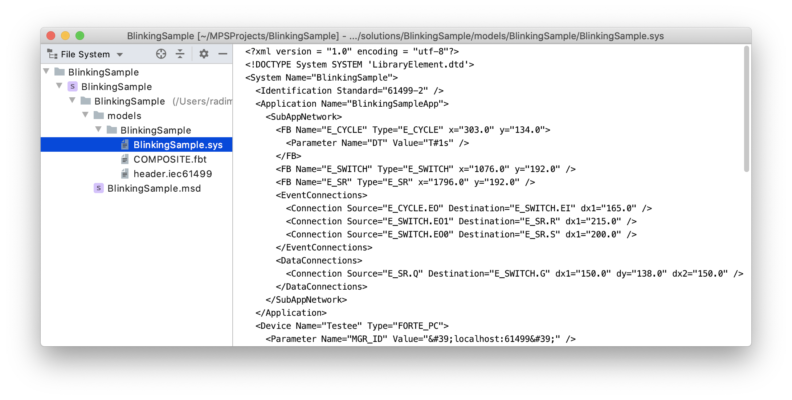

The tutorial highlights the basic features of the FBME platform. During the tutorial, we will build a small application and deploy it on a local device of the supported 4diac FORTE runtime environment.
Create a new project
To start the tutorial, open the FBME platform. The figure below shows the view of the platform on the first start.

Let's press Create New Project.
You will be prompted to enter the project name.
Let's name the project as Blinking Sample, choose System Configuration project template and name our system as BlinkingSystem.
The platform will create a system for us with one contained application called BlinkingSampleApp. The main view shows the editor of the created system.
Define an application network
We can navigate to the created application's network using the editor by selecting the application name and then invoking Cntrl+B or Cntrl+MouseClick.
To define function blocks on the network, we first have to import function block library into our solution.
FBME ships predefined library with all standard function blocks that are compatible with 4diac FORTE environment.
We can import this library by invoking Import Model action via Cntrl+M and then look for the library called iec61499.4idac.stdlib and hit Enter.
Let's define our network. Firstly, we have to put required function blocks in the editor.
We can use the completion menu to add a new function block on the diagram by double-clicking on the editor's canvas.
Let's add three functions blocks of types E_CYCLE, E_SWITCH and E_SR.
Then let's connect events E_CYCLE.EO to E_SWITCH.EI, E_SWITCH.EO0 to E_SR.S, E_SWITCH.EO1 to E_SR.R and data E_SR.Q to E_SWITCH.G.
Also, we have to specify that E_CYCLE has to generate events once per second.
Let's right-click on E_CYCLE.DT and choose Add Constant action and then specify T#1s value.
We should have achieved the following network.

Running the application
By design, our application should generate repetitive events on E_SR block with switching E_SR.Q value from FALSE to TRUE and back.
Let's test it by running the designed application our the local 4diac FORTE device.
Firstly, let's return to the editor of our system. Let's create there a declaration of the device that we will use to test our application. We can do it by hitting Enter in their currently empty list of the system's devices.
Let's name our device Testee, choose its type as FORTE_PC.
We also need to specify that the device has to be run locally.
To do so, let's type ( on the right side of the device's type name and enter the parameter MGR_ID equal to 'localhost:61499'.
That means FBME will look for the device by specified 61499 port to communicate with it.
Let's run the declared device.
FBME provides facility to run local 4diac FORTE device out of the box.
Let's configure it by right-clicking on the device and invoking Edit 'Device BlinkingSystem.Testee' action.
It opens a run configuration window for our device.
Let's specify the path to the 4diac FORTE runtime executable and click Run button.
FBME will run 4diac FORTE and open its console in the dedicated tool window.

We also have to specify the device's resource on which our application will be deployed.
Let's add a new resource by hitting Enter on the Testee 's resource list, name it BlinkyRES and select its type as EMB_RES.
Now we have to map our application on the resource, let's right-click on the application and invoke Map to... -> Testee.BlinkyRES.

We have to configure the created resource before deployment.
Let's open the resource's network (using Cntrl+B on the resource's selected name) and connect START.COLD and START.WARM events to E_CYCLE.START.
Now we can deploy the configured resource by right-clicking on the resource and invoking Deploy Resource action.
At this point, device started to run our application.
Monitoring the application
To ensure that our application executes correctly, we would like to observe its state over time. Fortunately, FBME provides the functionality of state monitoring of a running device.
Let's ask FBME to reveal the state of our application's function blocks.
Firstly, we have to invoke action Enable Watching for Resource from the context menu.
To expose the state of interested function blocks, we can select then and run action Watch for Selected Function Blocks from the context menu.

Exporting the system
FBME automatically exports edited systems and libraries into the standard XML-format.
The designed system should be located at <project_path>/BlinkingSample/models/BlinkingSample.sys file path.
We can also observe the exported system using File System project view.
